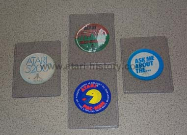

(Page 3)

Atari Defender scene changing stick-on, 2 Atari 5200 changing
scene stick-ons (one scene left, other scene right) and Atari Pac Man
scene changing stick-on.

Tiny Atari sew on patch, Atari plastic paperclips, Atari Pac Man stickers
and Atari Home Computer stickers

Atari Home Computers Prism
Inside is an Antic chip and at the bottom is says:
"We've Brought the Computer Age Home"

Mcdonalds Game pieces from 1982. Prizes inclduded
Atari home computers, video games and of course small
fries and a coke.

Atari Missle Command Pin and Atari Tempest pin.

Atari necklace.
Atari Pac Man frisbee
Solid Brass Atari Intermurial Software league coin.